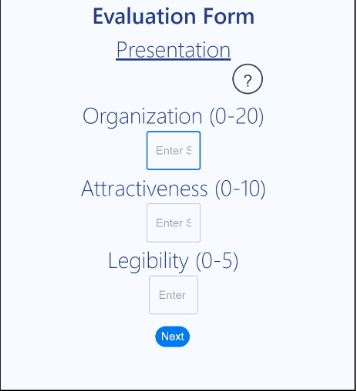

Hello, World. My name is Nick. Thanks for visiting.
I am currently a student acquiring my Bachelor's Degree in Computer Science at Colorado School of Mines. And I'm currently looking for a job.
This website serves as an addition to to my resume, although my official resume is listed in the "About" section.
Team Size: 4
Timeframe: February 2022-April 2022
Technologies Used: GameMaker: Studio 2, GML, Github
Description: Tower Defense: Engineered was a final project for my team's Game Development course.
It was created in GameMaker: Studio 2 and helped us develop skills for the game creation process as well as
general team project skills. Much of the work was in our Game Development Document and Github project backlog.
The concept was a tower-defense style game in which the player has an active role fighting and repairing/upgrading towers
during enemy waves. The game in its current state only has two levels, with plans to expand at a later date. A mock-trailer for
the game can be found here.
Presentation Evaluation App
An evaluation webapp made for RMS-AAPG (Rocky Mountain Section of the American Association of Petroleum Geology).
Team Size: 5
Timeframe: May 2022-June 2022
Technologies Used: React, Microsoft Azure Cloud Service, SQL Database, NodeJS, GitHub, Postman
Description: My team was asked by RMS-AAPG to make a web application which could be used
by attendees to evaluate presentations at their annual conference. Through use of an Azure Cloud
database, it is reusable for every conference they hold. When a properly formatted spreadsheet
is uploaded, the sections and presentations are repopulated with that year's content. Proper security
measures were put in place to ensure accurate scores free of abuse. This was my first experience creating
a software solution that is actually used by a company. As such, in addition to the software itself, my team
and I produced a Project Report which can be found here
Team Size: Solo
Timeframe: November 2020
Technologies Used: C++, MS Visual Studio, SFML
Description: A simple musical synthesizer to challenge myself in combining the science of sound with coding, as well as creating a robust GUI from scratch. It uses a formula to produce a sin wave from the given frequency of the note being pressed. In addition, it has an "alternate mode" which produces a square wave for an 8-bit like sound.